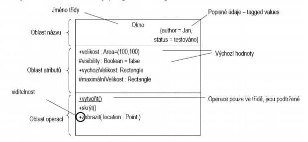

23. SOFTWAROVÉ INŽENÝRSTVÍ
Historie a definice Softwarového Inženýrství
V 60.letech nastala softwarová krize, kdy se přemnožily projekty, které nemohly být včas vyřešeny. Software byl nespolehlivý a v mnohých případech docházelo k havariím. Proto potřebovala být vynalezena disciplína, která by uvedla standard pro vývoj software a jeho dokumentaci, jak pro uživatele, tak pro vývojový tým.
Softwarové inženýrství je disciplína, která se zabývá zavedením a používáním řádných inženýrských postupů při vývoji software a cílem je vyvinout ekonomický a spolehlivý software pro dostupný hardware.
Softwarový produkt
Je počítačový program, který v sobě zahrnuje dokumentaci jak uživatelskou i vývojovou. Softwarový produkt se dá rozdělit na generický, tedy vyvíjený pro trh, a nebo zakázkový, který je vyvíjený na požadavky zákazníka.
Etapy vývoje software
- Koncepce - úvodní studie
- Analýza - požadavky a návrh
- Implementace - kódování
- Testování
- Používání a údržba
Úvodní studie
Měla by stanovit základní popis softwaru, jeho účel, rozsah, cílové uživatele a podmínky pro omezení vývoje. Studie by měla také shrnout základní cíl projektu, v hrubém provedení stanovit požadavky pro daný systém, shrnout obecné funkce a naznačit předpokládaný časový harmonogram.
Etický kodex softwarového inženýra
- Software nesmí být v rozporu s veřejným zájemcem
- Jednat vždy v nejlepším zájmu klienta a zaměstnavatele, pokud není v rozporu s předchozím bodem
- Mít jistotu, že produkt a jeho změny jsou na nejvyšší možné úrovni
- Zachovat nezávislý profesionální úsudek
- Manažeři v oblasti SWI mají propagovat etický kodex při vývoji
- Dbát na reputaci oboru v souladu s veřejným zájmem, ale ne v rozporu s ním
Softwarový proces
Definuje kdo, co, kdy vykonává a rozlišuje přitom zákazníka, dodavatele a uživatele. Rozděluje se na:
-
Analýzu a specifikace
- Analyzuje rizika a sbírá požadavky
- Příprava akceptačního testu
-
Architektonický návrh
- Koncept systému
- Rozklad systému na menší části
- Postup nasazení a plán testování
-
Implementaci a testování
- Kódování, tedy tvorba samotného softwaru v kódu
- Testování jednotlivých částí systému
-
Integraci a testování
- Spojení částí systému v jeden celek a jeho následné testování
-
Akceptační testování a instalaci
- Ověření zákazníka, že systém funguje podle předpokladů
-
Provoz a údržbu
- Oprava chyb, které vzniknou po nasazení
- Rozvoj podle měnících se požadavků
Vodopádový model
Dělí projekt do nepružných fází a neumožňuje tak reagovat na měnící se požadavky. Proto je vhodný pro projekty, při kterých jsou pevně definovány požadavky (v praxi velmi malé procento projektů ). Využívá se především při vývoji podsystémů u velkých projektů.
Přírůstkový model
Software není dodán jako celek, ale je dodáván po částech. Umožňuje reagovat na požadavky dodávané před každou částí a zůstávají fixní po celou dobu vývoje dané části. Zákazník tak může hodnotit funkcionalitu systému po každé dodané části a dostává funkční systém o něco dříve.
Spirálový model
Je reprezentovaný spirálou, jedno otočení spirály představuje jednu vývojovou fázi projektu. Spirála nemá dané specifické rozdělení fází, lze modifikovat dle potřeby. Výhody spočívají v možnosti reagovat na měnící se požadavky, při každém otočení spirály ( jedna fáze nastává víc než jednou za dobu vývoje ) a v tom, že po každé otočce přináší tento model prototyp softwaru.
Bussiness procesy
Popisují fungování firmy a postup jak řeší situace a úkoly. Určují interní a externí procesy nebo vazby. Popisují se nejčastěji pomocí BPMN (Bussiness Process Model Notation), méně častěji pomocí diagramů UML.
Požadavky na software
Určují funkcionalitu vytvářeného systému, která je vykomunikována se zákazníky a uživateli ještě před zahájením vývoje. Požadavky jsou následně analyzovány a doplněny o potřebné funkce nebo jsou odstraněny nesrovnalosti a nejasnosti, které by v průběhu vývoje mohly dobu vývoje prodloužit.
Požadavky se dají sbírat spoustu způsoby, například pomocí pozorování, přes dotazníky nebo při přímém pohovoru se zadavatelem. Při analýze by získané požadavky měly určit priority při vývoji daného systému.
Funkční požadavky
Funkce a služby systému. Může se jednat například o výběr zboží nebo přidaní zboží do košíku u e-shopů.
Nefunkční požadavky
Nesouvisí s funkcemi z pohledu uživatele. Patří sem spolehlivost a robustnost systému, výběr programovacího jazyka nebo typ aplikace (webová vs desktop vs mobilní)
Doménové požadavky
“Vycházejí z aplikační domény”. Mohou být funkční nebo mimofunkční. Příkladem je například čas potřebný k doručení zásilky, nebo zpoždění při její dopravě.
Jazyk UML
Jazyk UML pochází z anglické zkratky Unified Modeling Language. Byl vytvořen společností OMG (Object Management Group), první návrh UML 1.0 byl představen v lednu 1997. Jedná se o obrázkový jazyk a slouží k vytváření softwarových plánů. Slouží k vizualizaci, specifikování, sestrojení a dokumentování SW systému, není však omezen pouze na SW produkty (viz výrobní linky, management apod.).
Nejedná o programovací jazyk v pravém slova smyslu, mohou být však využity nástroje, které na základě UML dokáží generovat programový kód. UML je úzce spjat s objektově orientovanou analýzou a návrhem.
UML modeluje systém jako kolekci objektů, které spolupracují na realizaci potřeb uživatele.
- Statická struktura – jaké objekty jsou důležité
- Dynamické chování – životní cyklus objektů, jejich interakce k dosažení cílů
UML lze rozdělit na tzv. stavení bloky, činnosti a architekturu
- Prvky – elementy diagramů
- Vazby – spojnice mezi elementy
- Diagramy – skupiny prvků a vazeb, pohledy na model
Objekty a objektový přístup
V tomto přístupu k programování se programátor snaží popsat svět jak ho vidí on a ne jak ho vidí počítač a píše program z pohledu člověka a to mu dává tu jistou abstrakci.Základní jednotka objektového programování je objekt. Jedná se o entitu, která odpovídá objektům z reálného světa. Například Pes, pes má 4 nohy, hlavu, oči a může mít i jméno, ještě k tomu štěká.Objekt by se v programovaní popsal Atributy (vlastnostmi objektu) a Metodami (schopnostmi objektu). Z těchto objektů programátor postupně vytváří hierarchii objektů, které mezi sebou mohou komunikovat a v hierarchii na sobě být nějakým způsobem závislé.
Realizace UC
Use Case (UC) je typicky seznam akcí nebo událostí, které definují interakci mezi uživatelem nebo externím systémem a systémem, pro který UC vytváříme. Zorganizují se tak funkční požadavky, a definují se výsledný produkt daných interakcí, včetně všech akcí potřebných k dosažení výsledku (scénáře, které mohou nastat)

Návrh Uživatelského rozhraní
¨Návrh uživatelského rozhraní je významný pro uživatele. Interakční styly zahrnují přímou obsluhu, menu, vyplňování formulářů, příkazové řádky, přirozený jazyk. Grafické zobrazení lze využít pro zachycení trendů, přibližných hodnot, technologií apod. Barvy jsou přínosné, ale musí použity střídmě, konzistentně. Návrh UI zahrnuje analýzu, prototypování, ověření. Cílem analýzy je poznat jak uživatelé pracují, jaké jsou jejich představy. Prototypování zahrnujepapírové prototypy až po automatizované – interaktivní prototypy. Cílem ověření je zhodnotit shodnu s požadavky, ověřit zda uživatelé pracují jak mají apod.
Bezpečnostně kritické systémy
Kritický systém je takový systém jehož selhání může vést k ekonomickým ztrátám, poškození zařízení nebo zdraví. Provozní spolehlivost odráží také důvěru uživatelů. Dostupnost systému určuje pravděpodobnost funkčnosti v určitém časovém úseku. Spolehlivost určuje pravděpodobnost správné činnosti určité funkce systému. Spolehlivost i dostupnost jsou nezbytné, ale ne postačující podmínky bezpečnosti a zabezpečení systému. Spolehlivost jako parametr určuje pravděpodobnost výskytu chyby, známé chyby neovlivní spolehlivost. Bezpečnost je soubor vlastností systému, které musí být dosaženy, aby nedošlo k poškození prostředí nebo zdraví. • Zabezpečení určuje schopnost systému odolat vnějšímu útoku. Zlepšení provozní spolehlivosti vyžaduje sociotechnický přístup k návrhu systému.
Softwarové modely
Model je abstraktní pohled na systém. Dílčí typy modelů poskytují různý pohled na systém. Kontextové modely zasazují systém do okolí. Modely datových toků zachycují zpracování dat v systému. Stavové automaty definují chování Sémantické modely určují strukturu dat vstupujících a vystupujících ze systému. Objektový model popisuje logické entity systému, jejich vazby a agregaci. Sekvenční modely zachycují interakci mezi aktory a objekty, které realizují jejich činnost. Strukturní metody poskytují rámec pro modelování systémů na vnější i vnitřní podněty.
Návrh a architektura software
Softwarová architektura je rámec pro strukturování software. Architektonický návrh aplikace určuje, strukturu aplikace, styl návrhu, apod. Vytváří se různé pohledy – modely –Model struktury, řízení, dekompozice. Mezi tzv. organizační modely sdílené úložiště dat, klient-serve, vrstvový model. Dekompozici systému na moduly, lze zachytit objektovým modelem nebo pomocí tzv. pileline modelu. Modely řízení zahrnují centrální řízení nebo řízení událostmi
Verifikace a validace
Cílem verifikace je ověřit, že je software vytvořený správně tj. že software odpovídá specifikaci. Oproti tomu cílem validace je ověřit, že je vytvořený správný software, tedy že software odpovídá tomu, co uživatelé skutečně požadují. Proces verifikace a validace je aplikován celou dobu trvání softwarového procesu. Má dva základní cíle:
- Objevení defektů v softwaru.
- Hodnocení, zda je software užitečný a použitelný v prostředí nasazení.
Existují dva druhy verifikace: Statická a dynamická
- Statická verifikace - Kontrola software, zabývá se analýzou statické reprezentace softwaru a hledání problémů.
- Dynamická verifikace - Testování software, zabývá se chováním systému, kde jsou vlastnosti hodnoceni na základě testovacích dat.
Testování software
Testování může odhalit chyby, nemůže nám však zaručit, že žádná další chyba není. Vývojáři komponentů jsou zodpovědní za test svých komponentů. Testování systému se provádí nezávisle.
Cílem je hledání chyb. Úspěšný test je takový, který způsobí neočekávané chování systému. Testy zjistí přítomnost chyby, nikoliv nepřítomnost.
- Validační testování: Cílem je ukázat všem zúčastněným, že systém splňuje požadavky. Úspěšný test je takový, který prokáže, že systém pracuje, jak se očekává.
- Chybové testování: Cílem je najít chyby v softwaru, tam kde jeho chování je v rozporu se specifikací. Úspěšný test již byl definován (takový, který prokáže špatné chování).
Integrační testování spočívá v testování přírůstků. Testování sestavení se provádí před předáním uživateli. Je dobré využívat pravidla, zkušenosti při návrhu testů. Automatizace testů, přináší možnost opakování testů, využití sw. nástrojů. Závěr by měl být dle přístup KISS (Keep it simple and stupid). Návrh SW a programování by mělo být jednoduché.
Projektové řízení
Projekt je činnost v určitém časovém horizontu. Projektové týmy řeší otázku spolupráce. Projektové řízení řídí čas, zdroje a řeší kolize. Projektové řízení se stará o základní otázky jako co má být projektem dosaženo, jak dlouho bude projekt trvat, jaké činnosti projektu jsou kritické, co se stane při nedodržování termínů nebo jaké budou náklady na projekt.
Odhady pracnosti a doby řešení
Hostadlerův zákon
V softwaru vše stojí více a trvá déle, a to i tehdy, když provedeme na tuto skutečnost korekci původního odhadu. Odhady jsou optimistické. Lidé vždy předpokládají, že vše půjde "dobře". Obvykle vše trvá minimálně o 1/3 déle.
Metody odhadů
-
Expertní odhady
- Odhad založen na zkušenosti experta
-
Pracnost fází bývá obvykle:
- 16 % analýza
- 17 % návrh
- 34 % kódování a jednotkové testy
- 18 % integrační testy
- 8 % dokumentace
- 7 % instalace a nasazení
-
Analogie
- Založeno na podobných projektech a identifikaci rozdílů mezi novým a již řešenými projekty
-
Metoda COCOMO(COnstructive COst MOdel) - metoda odhadu
velikosti
- Asi nejznámější přístup k odhadům
- Založeno na množství řádek zdrojového kódu
-
Functional Points - založeno na odhadu složitosti interakce
s okolím
- Lze ji uplatnit na konci detailního návrhu, kdy jsou již specifikovány transakce v budovaném systému a je jasná datová struktura
- Primárně sloužila metoda právě k měření složitosti systému. Vychází se z úměry, že čím je systém složitější, tím je také pracnější. Z toho se odvozuje i jeho pracnost. Metoda je poměrně objektivní
-
Use Case Points - založeno na využití Use Case modelů a
scénářů
- Výhodné pro první fáze vývoje
- Základní myšlenka vychází z toho, že funkcionalita softwaru je hlavním parametrem pro odhad pracnosti
- UCP se často kombinují – nebo převádějí na FP, řádky zdrojového kódu